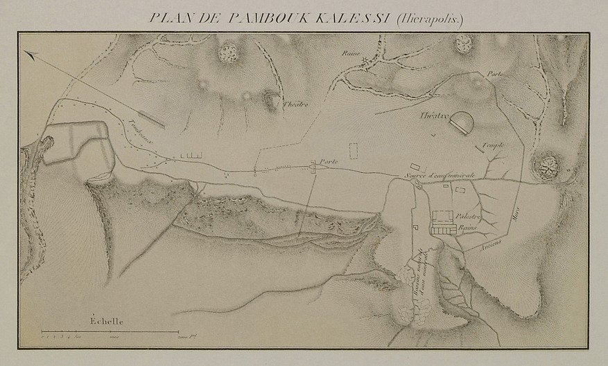

ⓘ
ⓘヒエラポリスは、パムッカレの輝く白い石灰華段丘のすぐ上にあり、自然と歴史がこれほど完全に溶け合う数少ない場所のひとつです。紀元前2世紀にペルガモン王によって築かれ、ローマ時代には温泉のおかげで保養地として有名になりました。カルシウムを多く含む水が何世紀もかけてつくった段丘は、綿の城のように斜面を覆っています。大通り、記念門、舞台建物が再建された壮大な劇場、アナトリア最大級の古代墓地を歩くことができます。聖フィリポのマルティリウムはキリスト教の歴史を伝え、円柱が沈む古代プール（アンティーク・プール）は楽しい休憩場所です。1988年からユネスコ世界遺産に登録されています。
⏳ 時間旅行
| 当時 | 今日 |
|---|---|
| 紀元前2世紀にペルガモン王エウメネス2世が築いたとされる温泉都市 | 今日の温泉リゾートの町 |
| 劇場：1万〜1万2500席 | 大きな屋内アリーナ |
| ネクロポリス：アナトリア南西部最大の墓地。道の両側に約2km続く | 町へ入る道の両側に並ぶ巨大な墓の大通り |
| プルトニオン：有毒ガスが噴き出す洞窟。冥界の門とされた | 発掘でよみがえった伝説の場所 |
| ローマ浴場：街で最大級の建物 | 現在のヒエラポリス考古学博物館 |
| カルシウムを含む温泉水がつくった真っ白な石灰棚 | 1988年からユネスコの自然・文化複合遺産 |
🎧 ヒエラポリスの一日
西暦200年。長旅の末、北から街に入ります。道の両側には何キロも墓が続きます。疲れた旅人が癒やしを求めて訪れ、なかにはそのまま眠る人もいます。
門をくぐると温泉の湯気が顔にかかります。浴場で何時間もくつろいだあと、温泉水が真っ白な段々をつくった斜面の縁から平野を眺めます。
午後はプルトニオンへ。洞窟の入口に近づいた鳥は落ちて死ぬと言われ、人々はここを冥界の門と呼んでいます。夜は1万人が入る劇場で芝居を観ます。
今、浴場は博物館になり、古代プールでは倒れた柱のあいだを泳げます。湯が流れ続けるかぎり、白い石灰棚も育ち続けています。
数値は推定で、資料によって異なります。図は説明用で、縮尺どおりではありません。
遺跡平面図

平面図: Léon de Laborde · Public domain · Wikimedia Commons
これは歴史的な図面で、現在の発掘状況とは異なる場合があります。
よくある質問
ヒエラポリス（パムッカレ）遺跡はどこにありますか？
ヒエラポリス（パムッカレ）遺跡はPamukkale, デニズリ（エーゲ海地方）にあります。行き方はこのページの地図または経路ボタンをご利用ください。
ヒエラポリス（パムッカレ）遺跡の見学にはどのくらい時間がかかりますか？
平均見学時間：2〜4時間。
ヒエラポリス（パムッカレ）遺跡でミュージアムパスは使えますか？
文化観光省が管理する博物館・遺跡で通常利用できます.
ヒエラポリス（パムッカレ）遺跡はどの時代のものですか？
ヒエラポリス（パムッカレ）遺跡はヘレニズム / ローマの時代のものです。
ヒエラポリス（パムッカレ）遺跡の近くには他に何がありますか？
近くの文化スポット：ヒエラポリス（パムッカレ）考古学博物館 (~1 km), ラオディケア遺跡 (~10 km), デニズリ・アタテュルクと民俗学博物館 (~16 km)。
ヒエラポリス（パムッカレ）遺跡に音声ガイドはありますか？
はい。このページの「聴く」ボタンで、日本語を含む8か国語で紹介を聴くことができます。
♿ バリアフリー情報
この場所の確認済みバリアフリー情報はまだありません。来訪者や博物館から情報を集め、確認後にここに掲載します。
文化観光省が管理する博物館と遺跡では、障害のある方と付き添いの方1名は、証明書を提示すると無料で入場できます。訪問前に最新の条件をご確認ください。 バリアフリーガイド →
♿ バリアフリー情報を送る
関連ガイド
写真
周辺の宿泊施設とレストラン
あなたのお店をここに掲載しませんか？ 広告掲載